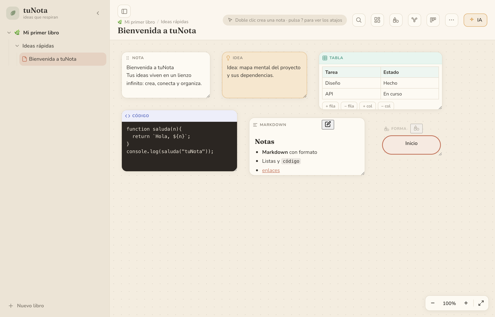

Vista general

La pantalla principal: a la izquierda el panel de libros → secciones → notas; arriba la barra de herramientas (buscar, plantillas, formas, mapa, kanban, más opciones e IA); y en el centro el lienzo infinito con bloques de distintos tipos —una Nota, una Idea (con color cálido), una Tabla, un bloque de Código, uno de Markdown ya renderizado y una Forma («Inicio»). Cada bloque se mueve, redimensiona y conecta.